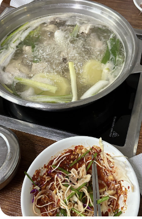
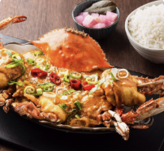
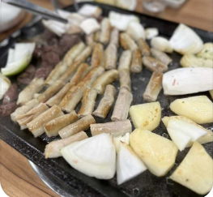

[닭한마리 칼국수]

메뉴: 닭한만리(★★★★★)
위치: 서울 노원구 동일로 1020
나의 리뷰: 우선 본점이기도 하고 만들어먹는 소스에 채소랑 같이 먹으면 매우면서 맛있고 감자를 으깨서 죽을 만들어 먹으면 그게 킥입니다
[타이인플레이트]

메뉴: 푸팟퐁커리(★★★★★), 팟타이(★★★★), 나시고랭(★★★★)
위치: 서울 노원구 화랑로51번길 38 1층
나의 리뷰: 학교 주변에 있어서 자주 갔는데 특유의 향이 없고 한국인 입맛에 맞춰서 먹기 좋고 특히 푸팟퐁커리가 진짜 맛있어요!
[하우돈곱창]

메뉴: 알곱창(★★★★★), 날치알볶음밥(★★★★)
위치: 서울 노원구 공릉로 34번길 20
나의 리뷰: 제가 곱창을 너무 좋아해요.. 곱창인데 무슨 말이 더 필요할까요ㅎ..